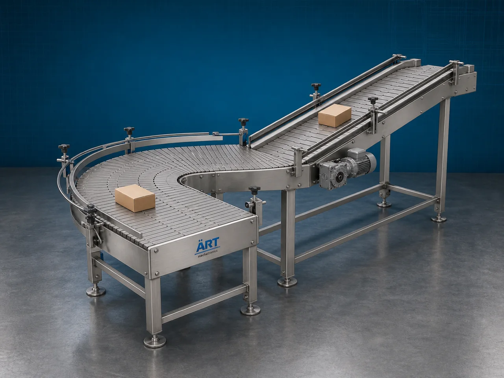

Slat Conveyor Machine (Industrial Slat Chain Material Handling & Transfer System)
A Slat Conveyor Machine, also known as a Slat Chain Conveyor or Industrial Slat Conveyor System, is a robust industrial material handling equipment designed for continuous transportation of heavy, hot, sharp-edged, irregular, or large products using interconnected slats or plates mounted on…

About the Slat Conveyor
Slat conveyor systems are widely used for: ✔ Heavy product transportation ✔ Assembly line automation ✔ Industrial material transfer ✔ Packaging line conveying ✔ Production line integration ✔ High-load conveying applications
The machine improves: ✔ Production efficiency ✔ Material handling reliability ✔ Product stability during transfer ✔ Workflow automation ✔ Labor reduction ✔ Industrial productivity
Unlike standard belt conveyors, slat conveyors use: ✔ Metal or plastic slats ✔ Chain-driven conveying systems ✔ Heavy-duty structural frames ✔ Rigid conveying surfaces
to handle materials that require stable and durable transportation.
Slat conveyor machines are widely used in industries such as:
Automobile industries
Packaging industries
Food processing industries
Beverage industries
Manufacturing plants
Bottling industries
Steel industries
Assembly line industries
where continuous transportation of heavy or unstable products is essential.
The machine is highly suitable for: ✔ Carton conveying ✔ Bottle handling ✔ Assembly line transfer ✔ Heavy product movement ✔ Industrial automation ✔ Packaging line integration
ART Mechatronics offers high-performance slat conveyor machines, engineered for continuous industrial operation, heavy-duty performance, stable product handling, and reliable long-term conveying.
Working Principle of Slat Conveyor Machine
Products or materials are placed on interconnected slats mounted on conveyor chains
Motor-driven chain system moves slats continuously along conveyor structure
Slats provide stable conveying surface for products
Machine handles: ✔ Bottles ✔ Cartons ✔ Drums ✔ Heavy products ✔ Industrial components ✔ Packaged materials smoothly and safely.
Rigid slat surface prevents: Product slipping Conveyor damage Instability during movement
Conveyor integrates with: Packaging machines Filling lines Assembly systems Bottling plants Production lines
Products discharged continuously at desired transfer point
Types of Slat Conveyor Machines
- 1. Steel Slat Conveyor
Uses: ✔ Heavy-duty steel slats for industrial load handling applications.
- 2. Plastic Slat Conveyor
Suitable for: ✔ Food and beverage industries requiring hygienic conveying.
- 3. Bottle Slat Conveyor
Designed for: ✔ Bottle handling and packaging lines
- 4. Assembly Line Slat Conveyor
Suitable for: ✔ Industrial assembly and manufacturing operations
- 5. Inclined Slat Conveyor
Used for: ✔ Elevated product transportation systems
- 6. Heavy Duty Industrial Slat Conveyor
Designed for: ✔ Large industrial and high-load applications
Industries Using Slat Conveyor Machine
🚗 Automobile Industry Component and assembly line transfer systems 📦 Packaging Industry Carton and package conveying systems 🥤 Beverage Industry Bottle handling and transfer systems 🍃 Food Processing Industry Food package and container conveying systems 🏭 Manufacturing Industry Industrial production line automation 🏗️ Steel Industry Heavy product handling systems 🧴 Bottling Industry Bottle conveyor and filling line integration ⚙️ Assembly Line Industry Continuous product transfer automation systems
Features & Advantages
✔ Heavy-duty and stable product transportation ✔ Suitable for large and irregular products ✔ Continuous industrial operation ✔ Chain-driven reliable conveying system ✔ Rigid slat surface for secure handling ✔ Heavy-duty industrial construction ✔ Easy integration with assembly and packaging lines ✔ Low maintenance and long service life ✔ Hygienic conveyor options available
Technical Highlights
Conveyor Type: Steel slat conveyor Plastic slat conveyor Inclined slat conveyor Construction: Stainless Steel / Mild Steel Slat Material: Steel slats Plastic slats Drive System: Chain drive system Geared motor drive Conveyor Arrangement: Horizontal Inclined Curved transfer Automation: Semi-automatic Fully automatic PLC-based systems
Turnkey Slat Conveying Solutions
ART Mechatronics offers: Complete slat conveyor systems Assembly line automation solutions Packaging and bottling line integration Heavy-duty product handling systems Installation & commissioning After-sales service & AMC
Why Choose Art Mechatronics
Expertise in industrial material handling and automation systems Customized slat conveyor solutions for multiple industries High-performance and durable industrial construction Energy-efficient and reliable conveying systems Proven industrial performance across sectors
Applications
Automobile Industries Packaging Facilities Beverage Plants Food Processing Plants Manufacturing Industries Bottling Facilities
Related Conveying & Handling machines
Get pricing & specs for the Slat Conveyor
Share the product, target capacity, current process and plant location. These details help our engineers discuss the right machine or line configuration.
One partner, from design to start-up
ART Mechatronics designs, manufactures, installs and commissions your Slat Conveyor solution with regional presence in India, UAE and Thailand.